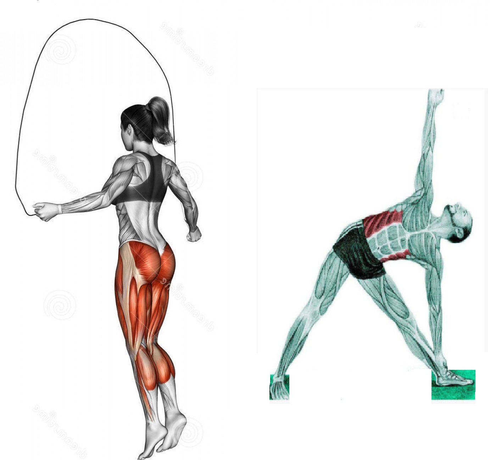
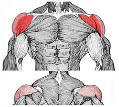
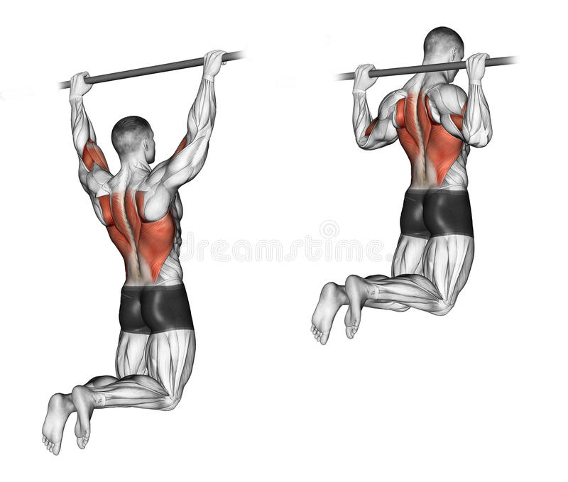
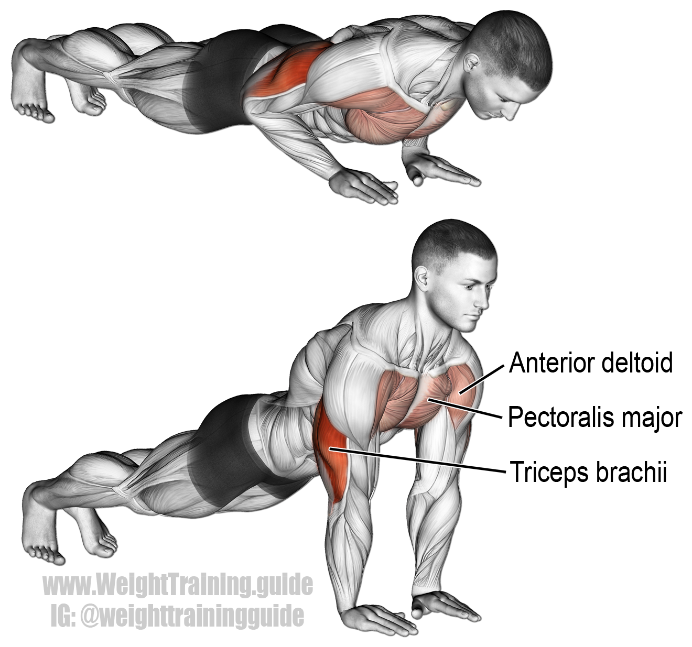
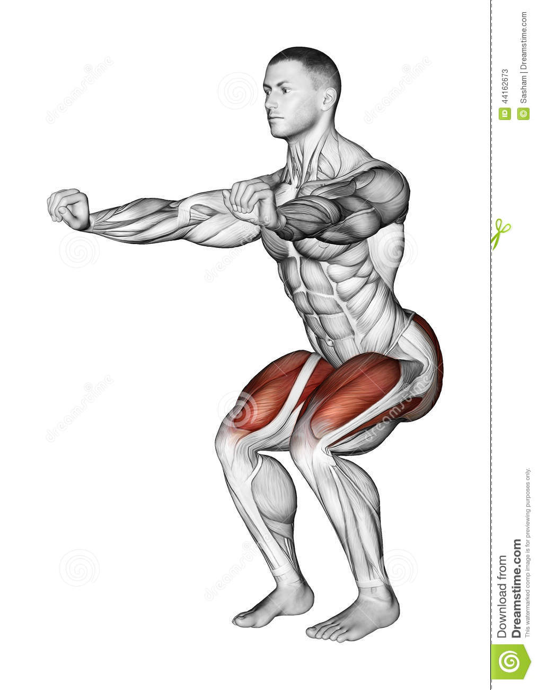
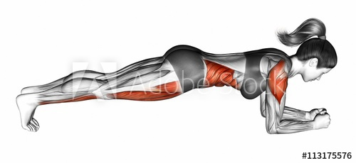
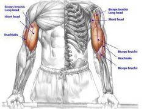
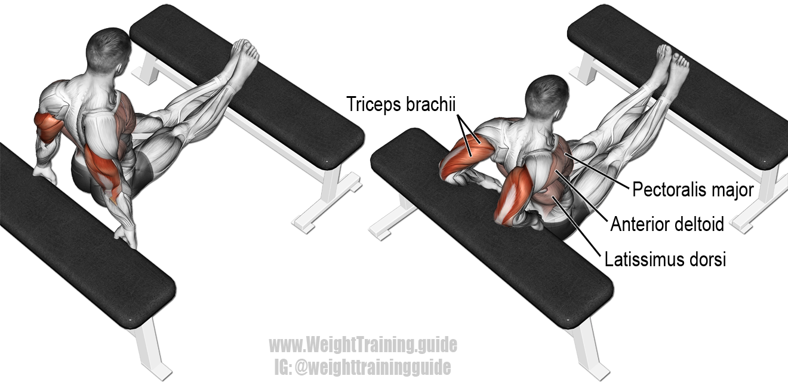

CALISTHENICS
Calisthenics (American English) or callisthenics (Commonwealth English) are exercises consisting of a variety of gross motor movements—running, standing, grasping, pushing, etc. — often performed rhythmically and with minimal equipment, so essentially, bodyweight exercises. They are intended to increase body strength, body fitness, and flexibility, through movements such as pulling or pushing oneself up, bending, jumping, or swinging, using only one's body weight for resistance; usually conducted in concert with stretches. When performed vigorously and with variety, calisthenics can provide the benefits of muscular and aerobic conditioning, in addition to improving psychomotor skills such as balance, agility and coordination. Many consider calisthenics as "movement through space", meaning you can move freely without any restriction blocking your full strength.
Warm-Up
Never miss warmup
Most warmups don’t take very long, just two-three minutes, five minutes tops. To benefit us the most a warm-up should work the same muscles we will be engaging during the main workout - they should include lighter exercises or a toned down version of the training ahead.
If you are a runner, your best warm-up is a light jog.
If you are doing martial arts training a warm-up should also include a few light kicks and punches.
If you are doing bodyweight workouts basic body (neck, arms, torso, legs) rotations will get your blood flowing.
If you are about to lift weights, do a few lifts with very light weights.
Shoulders
YTWL’s (Beginner)
YTWL’s are done by lying face down on the ground or bending your upper body forward at a 90-degree angle and then repeatedly making the letters Y-T-W-L with your arms.The most typical way to do them is to repeat each letter before moving on to the next one: 10 Ys, 10 Ts, 10 Ws, 10 Ls, then rest and repeat. Just make sure to alternate Ls to train each side of your body.
Handstand Pushups (Advanced)
To begin, you need to get in a handstand position close to a wall. Place your palms more than shoulder-width apart and as near as possible to a wall. Stand on both your hands, with your legs straight up and shoulder-width apart, with the heels touching the wall behind Arms, back, and legs are straight and abs tight.Lower your body towards the floor by bending the elbows till head touches the floor. Elbows move out. Touch the floor and Push up by straightening the elbows.
Back
Pull-up Negatives (Beginner)
Select the kind of pullup for you to use and jump up so that your chest will be over the bar. Gravity will do its role and bring you down after you jump. With all your might, resist gravity's force when going down. When you land on your feet just jump up again and repeat the negative.
Muscle Ups (Advanced)
Starting in a dead hang position on a straight pull-up bar, get a good kip going with your legs and hips. Keep your elbows in tight and “pull the bar down to your belly button” while simultaneously exploding your hips up at the same time. Once your hips and legs are parallel to the floor and your hands reach your belly button, explosively throw your chest and head over the bar. Finally, press up so your arms are in full extension.
Chest
Basic Push-ups (Beginner)
When down on the ground, set your hands at a distance that is slightly wider than shoulder-width apart.Think of your body as one giant straight line. With your arms straight, butt clenched, and abs braced, steadily lower yourself until your elbows are at a 90 degree angle or smaller.Once your chest touches the floor (or your arms go down to a 90 degree angle), pause slightly and then explode back up until you’re back in the same position.
Superman Push-ups (Advanced)
Starting in a dead hang position on a straight pull-up bar, get a good kip going with your legs and hips. Keep your elbows in tight and “pull the bar down to your belly button” while simultaneously exploding your hips up at the same time. Once your hips and legs are parallel to the floor and your hands reach your belly button, explosively throw your chest and head over the bar. Finally, press up so your arms are in full extension.
Legs
Squats (Beginner)
Stand with feet a little wider than shoulder-width apart, hips stacked over knees, and knees over ankles.Roll the shoulders back and down away from the ears.It's important to maintain a neutral spine throughout the movement.Initiate the movement by inhaling and unlocking the hips, slightly bringing them back.Keep sending hips backward as the knees begin to bend.While the butt starts to stick out, make sure the chest and shoulders stay upright, and the back stays straight. Keep the head facing forward with eyes straight ahead for a neutral spine.Engage core and, with bodyweight in the heels, explode back up to standing, driving through heels.
Pistol Squats(Advanced)
The pistol squat is an advanced exercise, and requires a serious game plan to avoid overloading the knee joint. If you come up on your toes and your heel leaves the ground at any point during the exercise, that’s your cue to start building on the basics. Break down the pistol into seven simple progressions.Use a box or a band. To get the most from the box, focus on powering through the heel. “Mentally, only think about stabilizing through your heel and forget that your toes exist. Slowly go through a few inches of depth and the minute you feel your heel rise up, simply drop the other leg for safety to the ground.” Continue working on your ankle and hip mobility as well and you’ll eventually hit depth you need for the full pistol squat.
Core
Plank (Beginner)
Plant the hands directly under the shoulders (slightly wider than shoulder-width apart) like you’re about to do a push-up.Ground the toes into the floor and squeeze the glutes to stabilize the body. Your legs should be working in the move too; careful not to lock or hyperextend your knees.Neutralize the neck and spine by looking at a spot on the floor about a foot beyond the hands. Your head should be in line with your back.Hold the position for 20 seconds. As you get more comfortable with the move, hold your plank for as long as possible without compromising form or breath.
Dragon flag (Advanced)
A dragon flag is typically performed lying face-up on a bench or on the ground with your hands grasping a sturdy object behind you for support.From here, the objective is to lift your entire body up in a straight line, stacking it vertically over your shoulders, then slowly lower back down until parallel to the ground and repeat.The aim is to keep your body straight, so do your best to avoid bending at the hips. Your abs will have to provide extreme stabilization to do so. In fact, you'll also need to engage your lower back, glutes, and other trunk musculature to maintain your form.Though the dragon flag emphasizes the abs, it's really a full-body exercise.
Biceps
Chin-Ups (Beginner)
Put your hands on the bar with your palms facing your body. Whereas a pull-up would begin with your palms facing away, a chin-up begins with your palms facing your body. Grip the bar comfortably but firmly, with your hands spaced a few inches apart. Raise your body until your chin is above the bar. Use your upper arm strength to lift your body toward the bar, stopping when your chin is above the bar. Your elbows will be fully bent. Bend your knees or cross your feet to distribute your weight more evenly.Lower yourself back down. Using a slow, controlled motion, lower yourself until your arms are straight.
Pseudo Planche Push-Ups (Advanced)
Lie on a mat chest down with your legs extended behind you. Put your hands on the floor alongside your stomach, bend your elbows against your ribs and turn your fingers to face away from your trunk.Tuck your toes under and rise up so you're just supported on your toes and palms. Squeeze your thighs together and brace your abdominal muscles to keep your body in a rigid line.Bend and extend your elbows to push up and down. You'll feel the weight of your body drive more into your chest and fronts of the shoulders. Contract your abs the entire time to prevent your hips from dropping.
Triceps
Bench Dips (Beginner)
For this exercise you will need to place a bench behind your back. With the bench perpendicular to your body, and while looking away from it, hold on to the bench on its edge with the hands fully extended, separated at shoulder width. The legs will be extended forward, bent at the waist and perpendicular to your torso. This will be your starting position.Slowly lower your body as you inhale by bending at the elbows until you lower yourself far enough to where there is an angle slightly smaller than 90 degrees between the upper arm and the forearm.Using your triceps to bring your torso up again, lift yourself back to the starting position.Repeat for the recommended amount of repetitions.
Diamond Push-Ups(Advanced)
Get in the modified push-up position on your knees but with your hands together and back flat. Spread your fingers so that your index fingers and thumbs form a diamond, and extend your arms. This is your start position.Allow your elbows to break, lowering your chest toward the floor while keeping your back flat.Press back up to full arm extension, repeating for the required number of reps.To make the movement more difficult, stay up on your toes rather than on your knees.
Privacy Policy | Terms of Service
2018 © & ® Shivam Saxena,Juet. All Rights Reserved. www.FitAsHulk.com